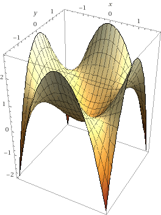
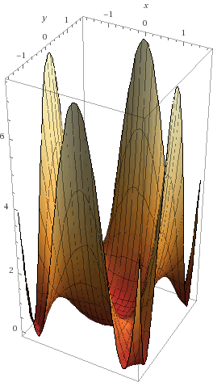

Notas del curso Machine Learning de Andrew Ng en Coursera
Table of Contents
- 1. Info
- 2. Ideas
- 3. Semana 1
- 4. Semana 2
- 4.1. Environment setup instructions
- 4.2. Multivariate linear regression
- 4.2.1. Video: Multivariate linear regression
- 4.2.2. Reading: multiple features
- 4.2.3. Video: Gradient descent for multiple features
- 4.2.4. Reading: Gradient descent for multiple features
- 4.2.5. Video: Gradient descent in practice I - Feature scaling
- 4.2.6. Reading: Gradient descent in practice I - Feature scaling
- 4.2.7. Video: Gradient descent in practice II - Learning rate
- 4.2.8. Reading: Gradient descent in practice II - Learning rate
- 4.2.9. Video: Features and polynomial regression
- 4.2.10. Reading: Features and polynomial regression
- 4.3. Computing parameters analitically
- 4.4. Submitting programming assignments
- 4.5. Review
- 4.6. Octave/Matlab tutorial
- 4.7. Review
- 5. Semana 3
- 6. Semana 4
1 Info
- https://www.coursera.org/learn/machine-learning
- Important notes for new ML students
- Hay más test cases en los Recursos del curso.
- Hay que usar Octave > 4.0.0
- Cousera Honor Code
2 Ideas
Ideas mías a lo largo del curso.
- Probar AutoML-Zero.
- Buscar clusters en espacios transformados y muy transformados. Ej: Fourier, Fourier de Fourier, Cepstrum…
3 Semana 1
Intro, regresión lineal, repaso de Álgebra.
3.1 Introduction
3.1.1 Video: Welcome
3.1.2 Video: What is Machine Learning
- Los algoritmos más importantes son el aprendizaje supervisado y el aprendizaje no supervisado. Es esta además la clasificación más general de algoritmos.
- Otros son el aprendizaje por refuerzo y los sistemas de recomendación.
- Hay que aprender las herramientas, pero es muy importante saber cómo y cuándo usarlas.
- Sea una máquina que debe hacer una tarea T, con un desempeño P y que la exponemos a experiencias (instancias) E de esa tarea T. Se dice que la computadora aprende si su desempeño P en la tarea T aumenta proporcionalmente a la cantidad de experiencias E.
- Otra definición de aprendizaje automático es la capacidad (de la computadora) de aprender a resolver problemas para los que no fue programada. ~
3.1.3 Reading: What is Machine Learning?
3.1.4 Video: Supervised Learning
- En el aprendizaje supervisado, le mostramos al programa ejemplos de entradas y sus correspondientes salidas/respuestas correctas. Ya sabemos cómo son las respuestas corectas; tenemos la idea de que hay una relación entre las entradas y las salidas. Dado un conjunto de entradas y salidas, intentamos obtener un modelo que permita predecir/inferir las salidas a nuevos datos de entrada.
- Los problemas de aprendizaje supervisado se clasifican en problemas de regresión y de clasificación:
- Problema de regresión si el conjunto imagen es continuo. La salida es una variable numérica.
- Problema de clasificación si el conjunto imagen es discreto. La salida es una variable categórica.
- Los algoritmos de Máquinas de Vector Soporte permiten infinitos valores de entrada.
3.1.5 Video: Unsupervised Learning
- En el aprendizaje no supervisado, le damos datos al programa con la intención de encontrar estructuras subyacentes, patrones.
- Un ejemplo típico es el clustering o agrupamiento de datos.
- En el ejemplo de sonido Cocktail Party, según FAQ de la semana 1, lo que usan es Principal Component Analysis, PCA, a mathematical trick that takes two sets of correlated data, and returns two new sets of data that are not correlated. No lo había visto así antes, creo…
3.2 Model and cost function
Vemos la regresión lineal como primer algoritmo de aprendizaje supervisado.
3.2.1 Video: Model representation
Un poco de nomenclatura:
- \(m\): cantidad de ejemplos de entrenamiento.
- \(\vec{x}\): entradas / descriptores / features
- \(\vec{y}\): salidas. \(\hat{\vec{y}}\) son las salidas estimadas.
- \(h_\theta\): función de hipótesis, de estimación. Tiene parámetros \(\vec{\theta}\). Entonces tenemos que \( \hat{y}^{(i)} = h_\theta(x^{(i)}) = h(x,\theta) \)
- \(x^{(i)}\): entrada $i$-ésima del vector de entradas, con índices empezando en 1.
- \((x^{(i)},y^{(i)})\) es un ejemplo de entrenamiento.
- Para regresión lineal de una variable tenemos entonces
\[ \hat{y}^{(i)} = h_\theta(x^{(i)}) = \theta_0 + \theta_1 * x^{(i)} \]
3.2.2 Reading: Model representation
- \(X\): el espacio de los valores de entrada.
- \(Y\): el espacio de los valores de salida.
- El objetivo del aprendizaje supervisado es encontrar una función \(h: X \rightarrow Y\) que sea buena prediciendo salidas a partir de entradas.
3.2.3 Video: Cost function
Formalizamos el problema del aprendizaje como la minimización de una función de costo \(J(\vec{\theta})\). La función de costo habitual y recomendada para problemas de regresión lineal es el error cuadrático medio (Mean Squared Error o Mean Squared Deviation).
Para un predictor como lo es \(h_\theta\), el MSE se define como \[ MSE = \frac{1}{N} (\sum_{1}^{N}Y_i - \hat{Y}_i )^2\]
En nuestro caso vamos a definir a la función de costo para este problema de regresión lineal univariable como
\[ J(\theta_0 , \theta_1) = \frac{1}{2m} \sum_{i=1}^m( h_\theta(x^{(i)}) - y^{(i)} )^2 \] \[ J(\theta_0 , \theta_1) = \frac{1}{2m} \sum_{i=1}^m( \theta_0 + \theta_1 * x^{(i)} - y^{(i)} )^2 \]
- El factor \(1/2\) es para ahorrar cálculos, puesto que en redes neuronales al hacer backpropagation o gradient descent hay que derivar esta función de error y entonces con este \(1/2\) simplificamos el \(2\) de la derivada del cuadrado.
La optimización es entonces encontrar los parámetros \(\theta\) que minimizan la función de costo: \[ \underset{\theta_0 , \theta_1}{\text{min}} J(\theta_0 , \theta_1)\]
En las notas del curso encontramos la forma matricial, que luego usamos para hacer descenso por el gradiente de forma matricial. Lo pongo acá por completitud.
MSE: \[ J(\theta) = \frac{1}{2m} (X\times\theta-Y)^T(X\times\theta-Y) \]
El producto implica la sumatoria y el cuadrado elemento a elemento.
3.2.4 Reading: Cost function
3.2.5 Video: Cost function intuition I
3.2.6 Reading: Cost function intuition I
3.2.7 Video: Cost function intuition II
3.2.8 Reading: Cost function intuition II
3.3 Parameter learning
3.3.1 Video: Gradient descent
El descenso por el gradiente es un algoritmo de optimización que vamos a usar (entre otras cosas) para minimizar la función de costo.
Hacer \[ \vec{\theta}[n+1] := \vec{\theta}[n] - \alpha \frac{\delta J(\vec{\theta})}{\delta\theta} \]
(expresado de otra manera)
\[ {\theta}_i[n+1] := \vec{\theta}[n] - \alpha \frac{\delta J(\vec{\theta})}{\delta\theta} \]
Hasta que \[ \vec{\theta}[n+1] - \vec{\theta}[n] < \epsilon \]
- Nomenclatura: usamos \(:=\) como operador de asignación.
- \(\alpha\) es la tasa de aprendizaje o learning rate del algoritmo.
Para calcular la derivada hacemos derivadas parciales. Actualizamos los parámetros simultáneamente en cada paso. Si actualizamos de a uno estamos haciendo otro algoritmo, que probablemente también converja pero es distinto.
Cuando la función de costo es el error cuadrático medio (MSE), la fórmula de actualización queda:
\[ \theta_i[n+1] := \vec{\theta}[n] - \frac{\alpha}{m} \sum_{i=1}^m( h_\theta(x^{(i)}) - y^{(i)} ) \theta_i \]
3.3.2 Reading: Gradient descent
3.3.3 Video: Gradient descent intuition
- Si \(\alpha\) es muy grande, el algoritmo puede oscilar o incluso diverger.
- Si \(\alpha\) es muy chica, puede tardar mucho en converger.
- Con \(\alpha\) fija, los "pasos" que da el algoritmo son cada vez más chicos a medida que la función de costo se aproxima a un mínimo local.
3.3.4 Reading: Gradient descent intuition
3.3.5 Video: Gradient descent for linear regression
Dice Andrew cerca del minuto 4:40:
But, it turns out that that the cost function for linear regression is always going to be a bow shaped function like this. The technical term for this is that this is called a convex function.
¿Por qué?
- La función de costo \(J(\vec{\theta})\) es el error cuadrático medio (MSE).
- El MSE es cuadrático respecto a los parámetros siempre y cuando estos sean lineales, de grado 1. La función de hipótesis debe ser lineal respecto a los parámetros para que la función de costo sea cuadrática.
- Sea por ejemplo \[ h(x,y) = a.x^2 + b.y^2 - c.x^2 y^2 \]. Esta función tiene más de un mínimo.

- Su MSE quedaría algo como \[ x^4 + 2 x^2 y^2 - 2 x^4 y^2 + y^4 - 2 x^2 y^4 + x^4 y^4 \] (sólo la elevé al cuadrado)

Hay otras formas de estimar los parámetros (regresores). Una de ellas es el método de los mínimos cuadrados (/Ordinary Least Squares/). El descenso por el gradiente es más fácil de computar que OLS, en el caso de datasets grandes.
En realidad todo lo que vimos es descenso por el gradiente por lotes, o batch gradient descent, que es cuando la función de costo se optimiza usando todas las entradas disponibles. Esto es costoso.
- TODO Leer más de regresión lineal
3.3.6 Reading: Gradient descent for linear regression
3.4 Linear Algebra review
3.4.1 Video: Matrix vector multiplication
- Más adelante vamos a ver por qué es mejor vectorizar calculos en lugar de iterar.
- Hace un truco interesante que es incluir a la ordenada al origen dentro del vector de parámetros —en realidad está bien, es un parámetro calculado—, y luego introduce una columna de \(1\)s en la matriz de entradas.
- La alternativa es sumar la columna aparte. \(A*X + B\)
3.4.2 Video: Matrix matrix multiplication
- Acá hace el mismo truco pero para hacer varias predicciones a la vez: usa varios modelos y varias entradas.
3.4.3 Video: Inverse and transpose
Interesante:
But the intuition if you want is that you can think of matrices as not have an inverse that is somehow too close to zero in some sense.
- Las matrices que no tienen inversa son matrices singulares o degeneradas.
- Asumo que se refiere a matrices cuadradas, que podrían tener inversa.
4 Semana 2
4.1 Environment setup instructions
4.2 Multivariate linear regression
4.2.1 Video: Multivariate linear regression
En la regresión lineal multivariable o regresión lineal múltiple, tenemos varios valores de entrada o descriptores. Para tener una notación más compacta y conveniente, vamos a definir:
- \(\theta_0=1\) ;
- \(n\) es la cantidad de entradas, descriptores;
- vamos a usar \(\vec{\theta}\) con índice \(0\);
- y \(\vec{\theta}_j^{(i)}\) es el elemento j-ésimo del ejemplo i-ésimo.
Entonces \(\vec{\theta}\) tiene \(n+1\) elementos y \[ \vec{\theta} = 1 + \theta_1 + \theta_2 + \dots + \theta_n \]
Y luego \[ \vec{h_\theta}(\vec{x}) = \vec{\theta}^T \cdot \vec{x} = \vec{x}^T \cdot \vec{\theta} \]
- Intuición para el ejemplo de estimar el precio de un inmueble: \(\theta_0\) es el precio base.
En 4.3.1 se introduce notación matricial que luego en el ejercicio 1 usamos para expresar todo de forma vectorizada. Dejo todo acá para más completitud.
MSE: \[ J(\theta) = \frac{1}{2m} (X\times\theta-Y)^T(X\times\theta-Y) \]
4.2.2 Reading: multiple features
4.2.3 Video: Gradient descent for multiple features
La regla de actualización era:
\[ \vec{\theta}[n+1] := \vec{\theta}[n] - \\alpha \frac{\delta J(\vec{\theta})}{\delta\theta} \]
Y para cuando la función de costo es el error cuadrático medio (MSE), queda (para actualización con todos los \(m\) ejemplos):
\[ \vec{\theta}_j[n+1] := \vec{\theta}[n] - \frac{\alpha}{m} \sum_{i=1}^{m} \left( ( \vec{\theta}^T \cdot \vec{x}^{(i)} - y^{(i)} ) x_j^{(i)} \right) \]
- Puedo ver el factor de avance luego de \(\alpha\) como el aporte al error medio que hizo el descriptor \(x_j\) .
- El producto vectorial y la resta son el error medio para ese vector de entrada.
- El factor \(x_j\) es el aporte de ese elemento, en esa dirección.
- La dirección final es la suma vectorial de los elementos.
La versión vectorizada/matricial del algoritmo está en las notas del curso y después la usamos en el ejercicio de programación 1. La dejo acá por completitud.
\[ \theta_{n \times 1}[i+1] = \theta_{n \times 1}[i] - \frac{\alpha}{m} X_{m \times n}^T (X_{m \times n} \theta_{n \times 1} - Y_{m \times 1} )_{m \times 1} \] \[ \theta_{}[i+1] = \theta[i] - \frac{\alpha}{m} X^T (X \theta - Y) \]
4.2.4 Reading: Gradient descent for multiple features
4.2.5 Video: Gradient descent in practice I - Feature scaling
- Al parecer, el algoritmo de descenso por el gradiente converge bastante más rápidamente si los descriptores están en el mismo orden de magnitud.
- Andrew propone que estén más o menos en el rango \(-3 < x_j < 3\) y duda si \(-\frac{1}{3} < x < \frac{1}{3}\)
- Para esto se suele normalizar cada descriptor respecto al rango de sí mismo en la muestra (los m ejemplos de entrada) o respecto a la desviación estándar. Esto se llama feature scaling.
- Otra práctica habitual es centrar en cero los valores, para lo cual se resta la media de la muestra. Esto se llama mean normalization.
- Más de feature scaling y mean normalization
De la ecuación de actualización de los parámetros de la ecuación de hipótesis infiero que el vector se mueve más rápidamente en dirección de los parámetros más grandes. Sin embargo en 4.2.6 dice:
This is because θ will descend quickly on small ranges and slowly on large ranges, and so will oscillate inefficiently down to the optimum when the variables are very uneven.
4.2.6 Reading: Gradient descent in practice I - Feature scaling
4.2.7 Video: Gradient descent in practice II - Learning rate
- Si la función de costo \(J(\vec{\theta})\) diverge u oscila, entonces mi tasa de aprendizaje \(\alpha\) es muy grande. Si es muy chica, converge lentamente.
- Puedo verlo graficando la función de costo.
- Elegir el valor de \(\alpha\) es, a priori, por prueba y error. ¿Habrá heurísticas para determinar un buen valor inicial?
- La condición de convergencia también suele depender del problema. Andrew habla de valores absolutos… ¿por qué no usar un \(\epsilon\) relativo?
4.2.8 Reading: Gradient descent in practice II - Learning rate
4.2.9 Video: Features and polynomial regression
4.2.10 Reading: Features and polynomial regression
- La regresión lineal es ajustar un modelo lineal, de grado 1, una combinación lineal entre las entradas y parámetros.
- Podemos ajustar modelos no lineales como hipótesis si codificamos estas no linealidades dentro de los descriptores. Por ejemplo, para el caso de la estimación de precios de casas, un posible descriptor podría ser el cuadrado del área, y ahí estamos incluyendo algo cuadrático en el modelo.
- Al incluir las no linealidades en los descriptores, pero todavía usando los parámetros como multiplicadores de orden 1, podemos seguir usando el descenso por el gradiente para optimizar.
- Andrew habla también de usar relaciones entre entradas básicas para construir otras entradas. Por ejemplo, el producto de dos descriptores hace un nuevo descriptor que codifica otra relación.
4.3 Computing parameters analitically
4.3.1 Video: Normal equation
- Otra forma de optimizar la regresión lineal es resolverla analíticamente con el método de los mínimos cuadrados lineales / ecuación normal. Esto da la solución óptima (que existe porque hemos dicho que para regresión lineal es un espacio de búsqueda cónvexo con un solo mínimo).
\[ \vec{\theta} = ( X^T \times X )^{-1} \times X^T \times \vec{y} \]
\[ X = \left[ x^{(i)} \right] \]
- A \(X\) la llamamos matriz de diseño. Cada fila es un ejemplo, y tiene tamaño $m × n+1 $
- La complejidad de invertir una matriz es \(O(n^3)\) y esto se pone lento para \(n > 10^5\). La complejidad del descenso por el gradiente, en cambio, es de \(O(k \cdot n^2)\).
- \(( X^T \times X )^{-1} \times X^T = X^{+}\) es la pseudoinversa de \(X\), y el método de mínimos cuadrados no es más que una solución (óptima en el sentido del error cuadrático) de un sistema de ecuaciones sobredeterminado.
- La pseudoinversa se puede calcular con Singular Value Decomposition o Descomposición QR, por ejemplo.
- La regresión por mínimos cuadrados asume muchas cosas que no necesariamente siempre se cumplen. Ver la regresión robusta como alternativa.
4.3.2 Reading: Normal equation
4.3.3 Video: Normal equation noninvertibility
Si \(( X^T \times X )\) no es invertible, entonces puede haber 2 problemas:
- El sistema esta subdeterminado. Faltan ejemplos, \(m < n\) / tenemos muchos descriptores.
- Después vamos a ver que se soluciona con regularización.
- Algunos descriptores están muy correlacionados / son linealmente dependientes.
Si no es invertible naturalmente (es singular o degenerada) igual se puede invertir con la pseudoinversa. Igual esto no sería problema si hubiésemos usado la pseudoinversa desde un principio en lugar de estar haciéndolo manualmente. Y, nuevamente, seguro hay métodos más robustos (aunque no hay que dejar de hacer análisis de la información con la que contamos).
4.3.4 Reading: Normal equation noninvertibility
4.4 Submitting programming assignments
4.5 Review
4.6 Octave/Matlab tutorial
% Para ver una matriz/vector como píxeles con color A = magic(9) figure imagesc(A) colorbar colormap gray
4.7 Review
4.7.1 Programming assignment 1: linear regression
- Mi gradient descent convergía pero no al mismo resultado exacto, y más rápida o lentamente. Me faltaba el factor \(1/m\).
- Armé una versión vectorizada del gradient descent pero es distinta a la propuesta:
La mía:
- usé \(n\) como la longitud de \(\theta\), incluyendo los \(1\)s.
M = length(y); % number of training examples N = length(theta); error = (X * theta) - y; % Mx1 % ponderated_error = repmat(error, [1, N]) .* X; % MxN % ponderated_error = error * ones(1,n) * X % MxN, equivale al broadcasting ponderated_error = error .* X; % Broadcasting. MxN % gradient = sum(ponderated_error,1); % 1xN gradient = ones(1,M) * ponderated_error; % 1xN, equivalente a la sumatoria theta = theta - (alpha/M) * gradient'; % Nx1
\[ \theta_{n \times 1}[i+1] = \theta_{n \times 1}[i] - \frac{\alpha}{m} \left[ 1_{1 \times m} \left( X_{m \times n} \theta_{n \times 1} - Y_{m \times 1} \right)_{m \times 1} 1_{1 \times n} X_{m \times n} \right]^T \]
La original es más compacta:
\[ \theta_{n \times 1}[i+1] = \theta_{n \times 1}[i] - \frac{\alpha}{m} X_{m \times n}^T (X_{m \times n} \theta_{n \times 1} - Y_{m \times 1} )_{m \times 1} \]
5 Semana 3
5.1 Classification and representation
5.1.1 Classification
Vamos a ver la regresión logística que es un algoritmo de clasificación (aunque su nombre diga regresión).
La regresión lineal no es un buen método para la clasificación en variables discretas. Acá necesitamos algo más no lineal. Una opción es usar regresión lineal + un umbral arbitrario de separación, pero aún no es suficiente.
Vamos a ver clasificación binaria. Definimos como \(0\) y \(1\) a las clases. También usamos etiqueta para denominar a la salida \(h_\theta(x)\).
5.1.2 Hypothesis representation
En clasificación binaria, los resultados observados sólo pueden tomar los valores \(0\) y \(1\), y por tanto nuestra función de hipótesis debería también sólo tomar esos valores.
Para empezar elegimos una función que esté acotada a ese rango. Una opción es la función logística o sigmoidea:
\[ h(z) = \frac{1}{1+e^z} \]
\[ h(\theta,x) = h_\theta(x) = \frac{1}{1+e^{\theta^T x} \]
- Mapea los reales al intervalo \([0, 1]\).
Podemos interpretar los resultados como la probabilidad de que la hipótesis tome un valor, dada determinada entrada.
- La suma de las probabilidades debe ser \(1\).
- La función logística o sigmoidea
- Se parece a la función cumulativa o función de distribución acumulada de una distribución normal/gaussiana.
- Pero esta tiene una función explícita, mientras que la FDA de la gaussiana no tiene forma cerrada.
- La función de densidad de probabilidad asociada "Se parece a la distribución normal en su forma, pero tiene colas más pesadas (y, por lo tanto, menor curtosis)". Wikipedia: Distribución logística
- Puedo pensar que la FDP de la distribución logística me indica la cantidad de información que me da el valor de un descriptor. En el pico es donde más aporta; luego mientras más me alejo del centro, más claro es que es de una clase o de la otra.
- Es una aproximación suave de la función escalón.

\[ f(x) = \frac{L}{1+e^{-k(x-x_0)}} \]
- \(L\) es el valor máximo.
- \(k\) es la tasa de crecimiento o pendiente de la curva.
- \(x_0\) es el centro
- Se parece a la función cumulativa o función de distribución acumulada de una distribución normal/gaussiana.